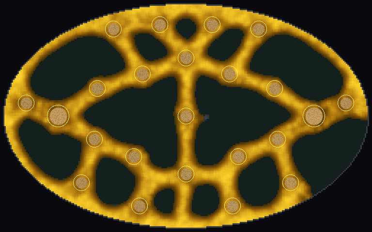
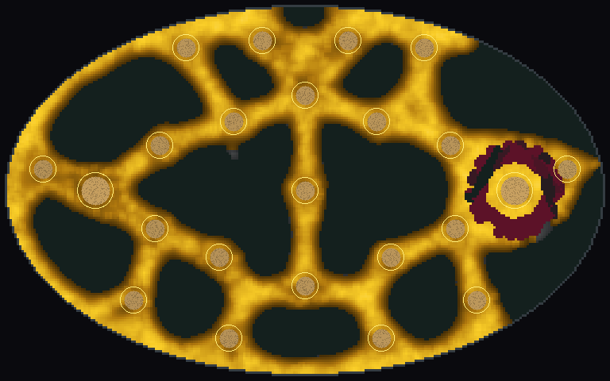
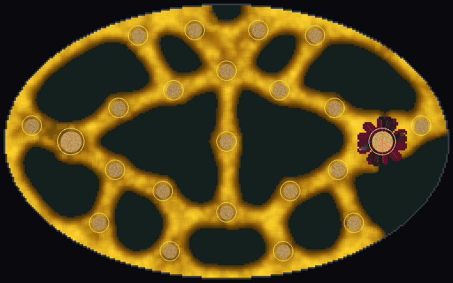
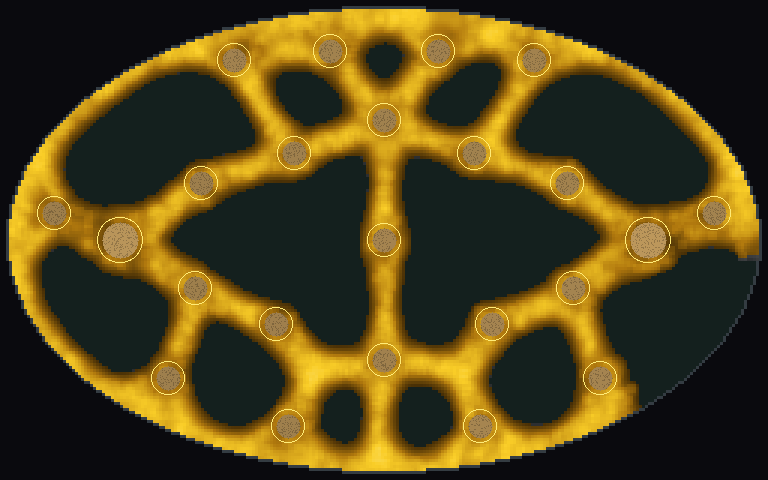
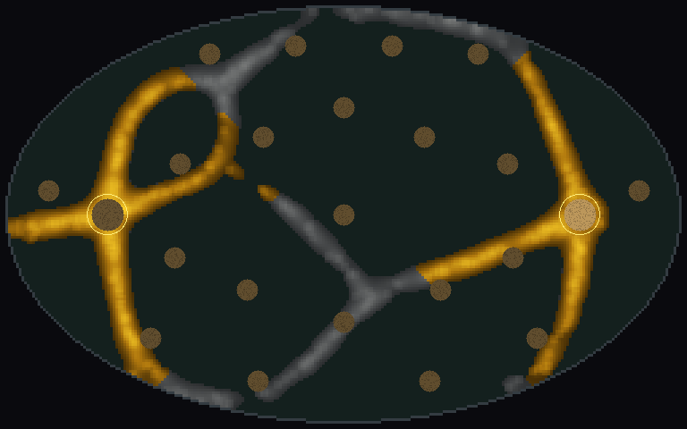

<title>Larder First Tests</title>
<meta name="claude:viewport-fit-sides" content="cover">
<link rel="stylesheet" href="https://fonts.googleapis.com/css2?family=Space+Grotesk:wght@500;700&family=Inter:wght@400;600&family=JetBrains+Mono:wght@400&display=swap">
<style>
/* Layout: one reading column; each test is a heading, a verdict line, then pictures with their counts beside them */
:root {
  --bg: #f5f6f1; --fg: #1d2117; --muted: #5d6452; --line: #d8dccd; --card: #ffffff;
  --accent: #a87a00; --good: #2f7a3a; --bad: #a33a2a;
  --display: "Space Grotesk", system-ui, sans-serif;
  --body: "Inter", system-ui, sans-serif;
  --mono: "JetBrains Mono", ui-monospace, monospace;
}
@media (prefers-color-scheme: dark) { :root:not([data-theme="light"]) {
  --bg: #13160f; --fg: #e9ecdf; --muted: #a4ab95; --line: #2d3326; --card: #1b1f16;
  --accent: #e2b43a; --good: #7cc787; --bad: #ec8a78; color-scheme: dark } }
:root[data-theme="dark"] {
  --bg: #13160f; --fg: #e9ecdf; --muted: #a4ab95; --line: #2d3326; --card: #1b1f16;
  --accent: #e2b43a; --good: #7cc787; --bad: #ec8a78; color-scheme: dark }
body { background: var(--bg); color: var(--fg); font: 16px/1.55 var(--body);
  padding-left: max(16px, env(safe-area-inset-left, 0px)); padding-right: max(16px, env(safe-area-inset-right, 0px)); padding-block: 32px 56px; }
main { max-width: 880px; margin: 0 auto; display: grid; gap: 40px; }
h1, h2 { font-family: var(--display); text-wrap: balance; margin: 0; line-height: 1.15; }
h1 { font-size: 2rem; }
h2 { font-size: 1.35rem; }
p { margin: 0; max-width: 65ch; }
.lede { color: var(--muted); }
section { display: grid; gap: 14px; }
.verdict { border-left: 3px solid var(--accent); padding-left: 12px; font-weight: 600; max-width: 65ch; }
.pics { display: grid; grid-template-columns: repeat(auto-fit, minmax(260px, 1fr)); gap: 16px; }
figure { margin: 0; background: var(--card); border: 1px solid var(--line); border-radius: 6px; overflow: hidden; display: grid; }
figure img { display: block; width: 100%; height: auto; }
figcaption { padding: 10px 12px; font-size: 0.9rem; display: grid; gap: 2px; }
figcaption b { font-family: var(--display); }
.n { font-family: var(--mono); font-size: 0.82rem; color: var(--muted); font-variant-numeric: tabular-nums; }
.tbl { overflow-x: auto; }
table { border-collapse: collapse; font-size: 0.9rem; font-variant-numeric: tabular-nums; min-width: 520px; }
th, td { text-align: left; padding: 6px 10px; border-bottom: 1px solid var(--line); }
th { font-weight: 600; color: var(--muted); }
td.num { font-family: var(--mono); text-align: right; }
.good { color: var(--good); } .bad { color: var(--bad); }
ul { margin: 0; padding-left: 1.2em; max-width: 65ch; display: grid; gap: 6px; }
</style>
<main>
  <header style="display:grid;gap:10px">
    <h1>Larder: the first three tests</h1>
    <p class="lede">The mould as the enemy of a squad, measured on today's dish before anything is built. The dish is the 23-pile field with one mould starting on the left home pile. The right home pile is the squad's <b>larder</b>, and every bite the mould takes from it is stolen. Each run lasts 90 seconds, on 16 paired seeds, with shots four times a second. All pictures are seed 1 at the time shown.</p>
  </header>

  <section>
    <h2>Test 1. Does fire on the supply lines protect the larder?</h2>
    <p class="verdict">No. A ring of fire round the larder cut theft by under 1%. Shooting the mould sitting on the larder cut it by 90%.</p>
    <p>The mould on the larder is fed by the larder itself, so cutting it off from the network starves nothing. Once the ring closes, a self-fed island inside keeps eating. A gun that only wipes trail, without killing, changed nothing at all, because the walkers lay it again at once.</p>
    <div class="pics">
      <figure><figcaption><b>Idle</b><span class="n">stolen 12,273 median · seed 1: 12,241</span></figcaption></figure>
      <figure><figcaption><b>Ring: thickest line in, held</b><span class="n">stolen 12,213 median · better than idle 16/16 but by 0.5%</span></figcaption></figure>
      <figure><figcaption><b>Shoot the mould on the larder</b><span class="n">stolen 1,220 median · better than idle 16/16 and ring 16/16</span></figcaption></figure>
    </div>
    <div class="tbl"><table>
      <tr><th>Hand (snip gun)</th><th>Median stolen</th><th>Against idle</th><th>p</th></tr>
      <tr><td>Idle</td><td class="num">12,273</td><td></td><td></td></tr>
      <tr><td>Ring, aimed at the thickest line in</td><td class="num">12,213</td><td>16 of 16 lower</td><td class="num">0.00003</td></tr>
      <tr><td>Ring, blind</td><td class="num">12,175</td><td>13 of 16 lower</td><td class="num">0.021</td></tr>
      <tr><td>Random anywhere</td><td class="num">12,264</td><td>9 of 16 lower</td><td class="num">0.80</td></tr>
      <tr><td><b>On the larder</b></td><td class="num good">1,220</td><td>16 of 16 lower</td><td class="num">0.00003</td></tr>
      <tr><td>Any hand, trail-clearing gun</td><td class="num bad">12,269–12,275</td><td>7–9 of 16</td><td class="num">≥ 0.80</td></tr>
    </table></div>
  </section>

  <section>
    <h2>Test 2. Does a bigger hoard draw the mould sooner?</h2>
    <p class="verdict">Yes, every time, but by half a second. The dish is too small and fast to show it.</p>
    <p>The larder was given a smell 0.3, 1 or 3 times a full pile's. The strongest smell was reached first on 16 of 16 seeds, but at 4.1 s against 4.6 s, and theft rose by under 1%. The mould crosses this whole field in about 4 seconds, so no front ever travels long enough to be seen coming, shot, or steered by smell.</p>
  </section>

  <section>
    <h2>Test 3. Is a starved mould a tree and a fed one a mesh?</h2>
    <p class="verdict">Yes: 10 loops against 1 at 45 s, fed more than starved on 16 of 16. But aimed fire saved 1% either way.</p>
    <div class="pics">
      <figure><figcaption><b>Fed (full piles)</b><span class="n">loops at 45 s: 10 median · walkers at the end 6,900</span></figcaption></figure>
      <figure><figcaption><b>Starved (piles at a quarter)</b><span class="n">loops at 45 s: 1 median · walkers at the end 341 · larder still loses 12,296</span></figcaption></figure>
    </div>
    <p>The starved mould is the tree the design hoped for, and its unfed branches go grey. Even so, the piece on the right lives on the larder and steals as much as the fed mould does.</p>
  </section>

  <section>
    <h2>What this changes in the design</h2>
    <ul>
      <li><b>A shot has to kill mould that is eating.</b> Cutting supply lines only hurts mould with no food of its own, such as fronts in transit or tree branches. The core verb becomes clearing the mould off a pile and keeping it off.</li>
      <li><b>Fronts must travel.</b> Smell, telegraphed attacks and supply-line cuts all need a map where the mould takes tens of seconds to arrive. That means the GPU scale (a 4x larger dish) or a slower mould, not today's dish.</li>
      <li><b>Lean against fat is real.</b> 16 of 16 seeds, so the Farmer-then-Hunter idea has a footing, but it only pays once fronts travel.</li>
      <li>Holm correction over the 26 comparisons: every result marked 16 of 16, and the smell results at 15 of 16 and 12 of 12, survive. The blind ring (p 0.021) does not.</li>
    </ul>
  </section>
</main>
